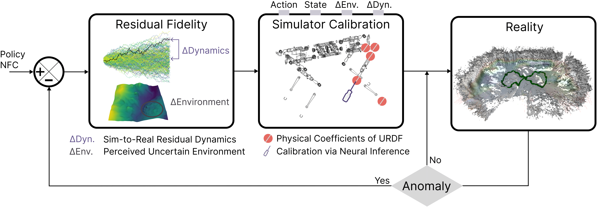

Every simulator has limits. Can robots learn to correct them online?
Correct parameters can still produce the wrong world. Even perfect mass and friction estimates cannot fix missing physics or a mistaken terrain map. Snow can look like firm ground yet compress under the robot. A policy improved in that simulation may still fail in reality.
Our idea: jointly calibrate physics and learn what it misses. NFC infers physical parameters together with residual fidelity: corrections to motion and perceived terrain. Conditioned on recent robot experience, a diffusion model samples these quantities jointly, capturing uncertainty over plausible simulated worlds in which to fine-tune the policy.
The residual makes a measurable difference. On rough real-world terrain with a broken front-left wheel axle, PPO achieves 25% success without NFC, 53% with parameter calibration alone, and 72% with full NFC.

-
Calibrate the physics
Use the robot’s recent trajectory to infer physical parameters, such as wheel friction and damping, with a conditional diffusion model.
-
Account for the residual
Jointly infer unmodeled motion and terrain corrections in a compact latent space, capturing uncertainty beyond simulator parameters.
-
Adapt when needed
When an anomaly is detected, fine-tune the policy in sampled simulation domains. Refine NFC sequentially as new experience arrives.
When uncertainty is high, a learned “hallucination” policy adjusts the spread of simulated domains to support policy improvement. It acts only in simulation.
Neural Fidelity Calibration Results
Loading results…
Sim-to-Real Adaptation Experiments
The front left wheel axle is broken in every experiment.